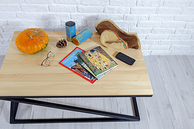

На сегодняшний день есть огромное количество разных стилей в интерьере, одним из них является лофт — современный стиль, девиз которого звучит как «минимум перегородок, максимум свежего воздуха».
Само слово loft имеет иностранное происхождение и дословно переводится с английского как «чердак», «апартаменты наверху». Идея использования заброшенных фабрик, складов, мастерских и мануфактур под жилье не нова, ее корни тянутся еще из 40-х годов и имеют американское происхождение.
Основной концепцией стиля является компоновка разных архитектурных решений. Например, гармоничное совмещение старого (кирпичные стены, лестницы, трубы, не прикрытые системы вентиляции, заводские приспособления) и чего-то современного (новомодная техника, метал и зеркала) в одном интерьере.
Основа помещения в стиле лофт состоит из деталей: мебель максимально проста и функциональна, цвета преимущественно холодных оттенков, большие окна, практически полное отсутствие декора. А то, что в других стилях выглядит как недостаток, различные кирпичные выступы, отштукатуренные стены, дощатый пол, является изюминкой данного стиля.
Стиль лофт больше подходит для:
- Людей творческих профессий, так называемой богемы. В стиле лофт легко оборудовать мастерскую и выставочный зал на одной территории, воплотив самые смелые идеи в жизнь.
- Экономные люди. Стиль лофт подходит для людей, у которых финансовый вопрос стоит остро, минимум затрат и простота во всем – основное кредо стиля.
- Владельцы квартир со свободной планировкой. Окна до пола и огромное пространство — лучшая основа стиля, в таком помещении можно «разгуляться».
- Свободолюбивые люди с желанием выделиться. Под такое описание чудесно подойдет молодежь, тяга которых ко всему новому и нестандартному поможет обустроить жилое помещение в стиле лофт лучшим образом.
Особенности стиля лофт
- Открытая планировка, практически полное отсутствие перегородок. Все функциональные зоны разделяются посредством разных видов зонирования (цветовые контрасты, акцентирование светом или же стеклянные перегородки, которые не нарушают основную концепцию открытого пространства)
- Индустриальные черты интерьера. Кирпичная кладка, трубы и грубая штукатурка является неотъемлемой частью стиля лофт. И даже если нет возможности «оголить стены», можно попробовать сделать имитацию кладки, к примеру, с помощью обоев с похожим рисунком. Кирпичная стена и вовсе является любимым приемом дизайнеров в таких помещениях.
- Комбинирование старого и нового в интерьере. Все, что рассматривалось в предыдущем пункте, должно гармонично сочетаться с ультрамодными тенденциями — современная техника, хромированные поверхности, стеклянные перегородки и стальные плитки для облицовки стен.
- Мебель в стиле лофт выполняет важную роль, помимо основных функциональных нагрузок (хранение вещей), у нее есть и дополнительная задача – зонирование помещения. Мебель в этом стиле может быть практически любой, но эффектнее смотрятся комбинации антиквариата с чем-то современным и минималистичным (например, комод«на ножках» и хромированный шкаф).
- Высокие светлые потолки также являются необходимой составляющей стиля лофт. Чем больше света и пространства будет в таком помещении, тем лучше.
- Нестандартные аксессуары. Всевозможные граффити, плакаты, абстракции или даже дорожные знаки будут очень уместны в общей концепции стиля лофт.
Стиль лофт идеален для тех, кто предпочитает воздух, свет и простор в своем доме.
Лофт в алматы
Источник: homester.com.ua